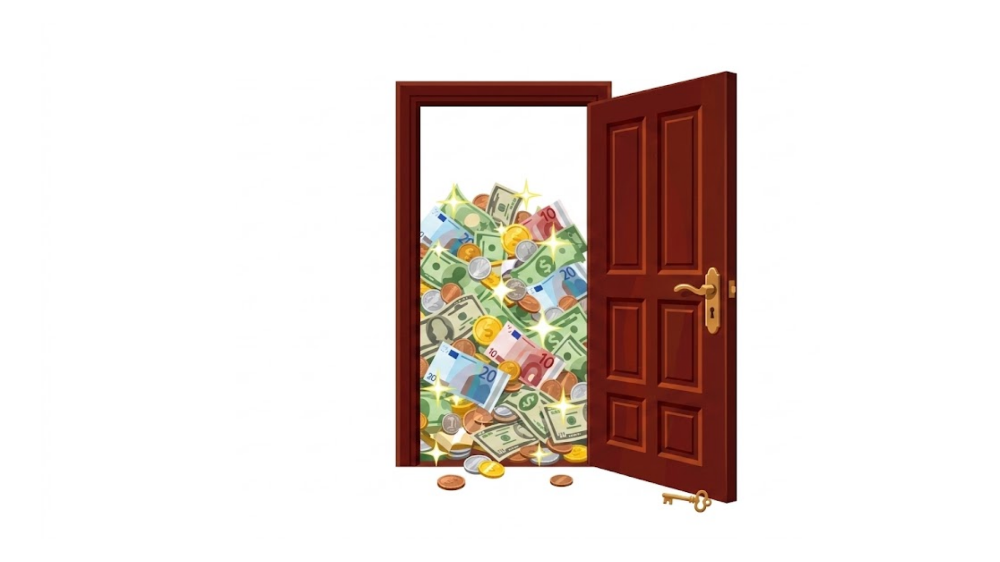
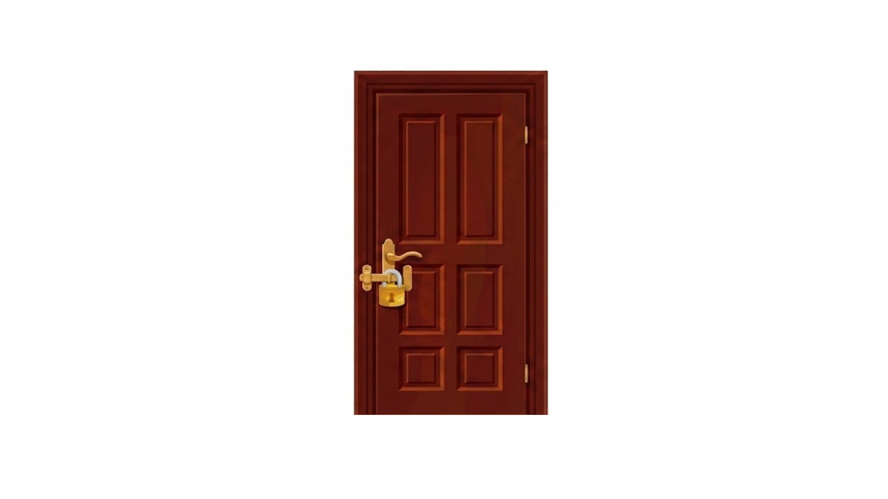
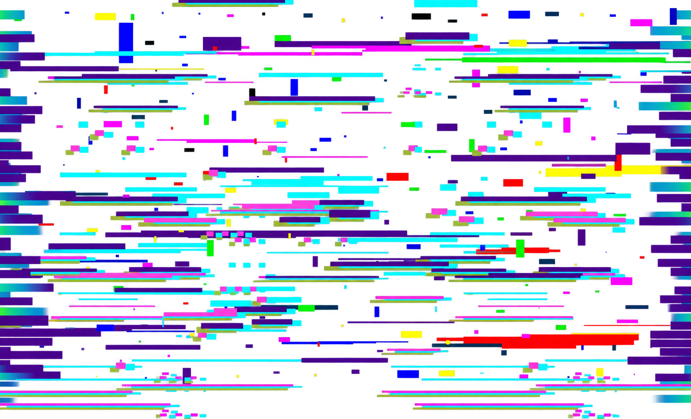

<!DOCTYPE html>
<!-- Tell the browser that this document uses modern HTML5 -->
<!-- This is the main HTML file for The Security Guard task experiment -->
<!-- Extensive comments for each section are provided for educational purposes -->

<!-- Root element containing the entire webpage -->
<html>

<!-- HEAD: metadata, CSS, and JS libraries -->

<head>
    <!-- Title of the experiment that will be displayed on the browser tab -->
    <title>The Security Guard Task</title>
    <!-- Loading the core jsPsych library that runs the experiment and stores its data -->
    <script src="https://unpkg.com/jspsych@7.3.4"></script>
    <!-- Loading jsPsych's default visual styles -->
    <link href="https://unpkg.com/jspsych@7.3.4/css/jspsych.css" rel="stylesheet" type="text/css" />

    <!-- Loading necessary plugins: keyboard response, slider response, and preload -->
    <!-- Recording participant keyboard responses -->
    <script src="https://unpkg.com/@jspsych/plugin-html-keyboard-response@1.1.3"></script>
    <!-- Displays a response slider -->
    <script src="https://unpkg.com/@jspsych/plugin-html-slider-response@1.1.3"></script>
    <!-- Loads the image files before the experiment starts to prevent delays -->
    <script src="https://unpkg.com/@jspsych/plugin-preload@1.1.3"></script>

    <!-- Custom style for the experiment -->
    <style>
        /* Styling the main content area automatically created by jsPsych */
        .jspsych-content {
            /* Preferred font and fallback fonts */
            font-family: 'Segoe UI', Arial, sans-serif;
            /* Base text size */
            font-size: 26px;
            /* Vertical spacing between lines: 1.5 times the font size */
            line-height: 1.5;
            /* Text color */
            color: black;
            /* Centers the text horizontally */
            text-align: center;
            /* Prevents the content area from becoming wider than 1000 pixels */
            max-width: 1000px;
        }

        /* Adds space below every paragraph inside a slide-text element (i.e., everything with class="slide-text" and <p> tags) */
        .slide-text p {
            /* Creates 40 pixels of empty space below the paragraph */
            margin-bottom: 40px;
        }

        /* Styles the arrow icon shown in the upper-right corner */
        .slide-arrow {
            /* Anchors the arrow to the visible browser window */
            position: fixed;
            /* Places it 40 pixels from the top edge */
            top: 40px;
            /* Places it 50 pixels from the right edge */
            right: 50px;
            /* Width of the arrow container */
            width: 80px;
            /* Height of the arrow container */
            height: 80px;
            /* Background color of the arrow container */
            background-color: black;
            /* Color of the arrow icon */
            color: white;
            /* Make the container circular */
            border-radius: 50%;
            /* Use Flexbox for centering the arrow icon (Flexbox is a CSS layout model) */
            display: flex;
            /* Center the arrow icon horizontally */
            justify-content: center;
            /* Center the arrow icon vertically */
            align-items: center;
            /* Size of the arrow icon */
            font-size: 50px;
        }

        /* Styling for the trial container */
        .trial-container {
            /* Use Flexbox for layout */
            display: flex;
            /* Vertical stacking of elements */
            flex-direction: column;
            /* Center elements horizontally */
            align-items: center;
            /* Center elements vertically */
            justify-content: center;
            /* Space between elements */
            gap: 20px;
            /* Use full width of the container */
            width: 100%;
        }

        /* Styling the images displayed during the trials */
        .trial-image {
            /* Displays the image as a block-level element (for the images, more reliable layout) */
            display: block;
            /* Sets the preferred image width to 800 pixels */
            width: 800px;
            /* Prevents the image from exceeding 80% of the viewport width */
            max-width: 80vw;
            /* Prevents the image from exceeding 60% of the viewport height */
            max-height: 60vh;
            /* Keeps the complete image visible without distorting its proportions */
            object-fit: contain;
        }

        /* Styling for the trial header  shown above each trial image (e.g., "CSELEKEDJEN!", etc.) */
        .trial-header {
            /* Sets the heading text size */
            font-size: 34px;
            /* Displays the heading in bold */
            font-weight: bold;
        }

        /* Styling the explanatory text shown during a trial */
        .trial-description {
            /* Prevents the text area from becoming wider than 900 pixels */
            max-width: 900px;
            /* Sets the size of the explanatory text */
            font-size: 22px;
        }

        /* Styles the row containing the two response options in the test phase */
        .test-response-row {
            /* Places the two response options next to each other */
            display: flex;
            /* Pushes one option to the left and the other to the right */
            justify-content: space-between;
            /* Aligns both options to the top of the row */
            align-items: flex-start;
            /* Makes the row use the full available width */
            width: 100%;
            /* Adds 10 pixels of space above the row */
            margin-top: 10px;
        }

        /* Styles each individual response option in the test phase */
        .test-response-option {
            /* Gives each option 45% of the response row's width (since there are two of them) */
            width: 45%;
            /* Sets the response text size */
            font-size: 26px;
            /* Displays the response text in bold */
            font-weight: bold;
            /* Sets the distance between lines to 1.4 times the font size */
            line-height: 1.4;
        }

        /* Reduces the space between elements in the confidence-rating trials */
        /* The element also has the trial-container class, so this overrides only its gap value */
        .confidence-container {
            /* Overrides the trial container's 20-pixel gap with a 10-pixel gap */
            gap: 10px;
        }

        /* Keeps the image at its intended size during confidence-rating trials */
        /* Overrides the slider trial's styling so the image does not appear smaller than in other trials */
        .confidence-container .trial-image {
            /* Forces the preferred image width to remain 800 pixels */
            width: 800px !important;
            /* Prevents the image from exceeding 80% of the viewport width */
            max-width: 80vw !important;
            /* Prevents the image from exceeding 60% of the viewport height */
            max-height: 60vh !important;
        }

        /* Removes jsPsych's default outer spacing around the confidence slider */
        #jspsych-html-slider-response-wrapper {
            /* Removes the margin on all four sides and overrides the plugin's default value */
            margin: 0 !important;
        }

        /* Reduces the space below the confidence slider */
        .jspsych-html-slider-response-container {
            /* Sets the bottom margin to one font-size unit and overrides jsPsych's default value */
            margin-bottom: 1em !important;
        }

        /* Removes extra space above the confidence slider's Continue button */
        #jspsych-html-slider-response-next {
            /* Sets the top margin to zero and overrides jsPsych's default value */
            margin-top: 0 !important;
        }

        /* Creates a container for stacking the glitch overlay on top of the unsafe image */
        .glitch-image-wrapper {
            /* Makes this container the positioning reference for the glitch overlay */
            position: relative;
            /* Makes the container fit around the image instead of using the full row width */
            display: inline-block;
            /* Removes extra line-height space around the images */
            line-height: 0;
            /* Hides any part of the overlay that extends beyond the image */
            overflow: hidden;
        }

        /* Positions and animates the glitch image over the unsafe image */
        .glitch-overlay {
            /* Removes the overlay from the normal layout and allows it to be placed over the base image */
            position: absolute;
            /* Attaches the overlay to all four edges of its wrapper */
            inset: 0;
            /* Makes the overlay as wide as its wrapper */
            width: 100%;
            /* Makes the overlay as tall as its wrapper */
            height: 100%;
            /* Stretches the overlay to completely fill the available area */
            object-fit: fill;
            /* Prevents the overlay from blocking mouse interactions */
            pointer-events: none;
            /* Runs the glitch-flicker animation every 80 ms in discrete steps and repeats it continuously */
            animation: glitch-flicker 80ms steps(2, end) infinite;
        }

        /* Defines how the glitch overlay's opacity changes during one animation cycle */
        @keyframes glitch-flicker {

            /* Makes the glitch overlay fully visible at the beginning and end of the cycle */
            0%,
            100% {
                opacity: 1;
            }

            /* Makes the glitch overlay mostly transparent halfway through the cycle */
            50% {
                opacity: 0.2;
            }
        }
    </style>

</head>

<!-- The body starts empty because jsPsych inserts the experiment content dynamically -->

<body></body>

<!-- Starts the JavaScript code that controls the experiment -->

<script>

    // SETUP

    // Initializes jsPsych, which will control the experiment and store its data
    const jsPsych = initJsPsych({
        // Runs this function automatically after the entire experiment has finished
        on_finish: function () {
            // Gets all recorded jsPsych data and starts creating the cleaned dataset for analysis
            const analysisData = jsPsych.data.get()
                // Keeps only rows belonging to the relevant experimental tasks (for trial level analysis)
                .filterCustom(function (row) {
                    return [
                        "practice",
                        "main",
                        "glitch",
                        "test"
                    ].includes(row.task);
                })
                // Keeps only the variables needed for analysis and sets their order in the CSV
                .filterColumns([
                    "participant_id",
                    "session_start",
                    "time_elapsed",
                    "task",
                    "question",
                    "item_id",
                    "learning_condition",
                    "memory_status",
                    "response",
                    "rt",
                    "correct_response",
                    "correct",
                    "missed_response",
                    "commission_error", // when participant responds during imagination trials
                    "false_alarm",      // when participant responds during lure trials
                    "miss",
                    "glitch_shown",
                    "glitch_assigned"
                ]);

            // Creates a filename-safe version of the participant ID
            const safeParticipantId = String(participantId)
                // Replaces every character except letters, numbers, underscores, and hyphens with an underscore
                .replace(/[^a-zA-Z0-9_-]/g, "_");

            // Creates a filename-safe timestamp when the experiment finishes
            const timestamp = new Date()
                // Converts the current date and time to a standardized UTC text format
                .toISOString()
                // Replaces every colon and period with a hyphen
                .replace(/[:.]/g, "-");

            // Creates a filename for the CSV file that includes the participant ID and timestamp
            const fileName =
                `security_guard_${safeParticipantId}_${timestamp}.csv`;

            // Triggers a local browser download of the cleaned dataset as a CSV file (local download for now, but can be changed to server upload later)
            analysisData.localSave("csv", fileName);

        }
    });

    // Creates an empty timeline that will hold all the trials and instructions
    const timeline = [];

    // Reads the participant ID from the page URL (later: Qualtrics integration) or uses TEST_LOCAL when no ID is provided
    const participantId =
        jsPsych.data.getURLVariable("participant_id") || "TEST_LOCAL";

    // Adds the same participant and session information to every trial's data row
    jsPsych.data.addProperties({
        // Stores the participant ID in the participant_id column
        participant_id: participantId,
        // Records the session start time in standardized UTC format
        session_start: new Date().toISOString()
    });

    // Defining the complete set of main stimuli
    // Each stimulus is stored as an object with four properties:
    // id: unique identifier of the stimulus
    // unsafe: file path of the unsafe image
    // description: possible negative consequence if the situation remains unsafe
    // secured: file path of the secured image
    const mainStimuli = [
        // 1
        {
            id: "tappancs",
            unsafe: "img/tappancs_unsafe.png",
            description: "Valaki Tappancs, az őrkutya előtt hagyott egy vödör mérgező folyadékot.<br>Ha nem távolítja el, Tappancs beleihat.",
            secured: "img/tappancs_secured.png"
        },
        // 2
        {
            id: "laptop",
            unsafe: "img/laptop_unsafe.png",
            description: "A laptopon nyitva maradt egy bizalmas adatokat tartalmazó fájl.<br>Ha nem zárja be, illetéktelenek hozzáférhetnek az adatokhoz.",
            secured: "img/laptop_secured.png"
        },
        // 3
        {
            id: "needles",
            unsafe: "img/needles_unsafe.png",
            description: "Valaki gombostűket szórt szét a közös ropi mellett.<br>Ha nem szedi össze őket, belekeveredhetnek az ételbe, és valaki megsérülhet.",
            secured: "img/needles_secured.png"
        },
        // 4
        {
            id: "spoons",
            unsafe: "img/spoons_unsafe.png",
            description: "Egy használt, piszkos evőeszköz került a tiszták közé.<br>Ha nem teszi mindet a mosogatógépbe, valaki herpesz fertőzést kaphat.",
            secured: "img/spoons_secured.png"
        },
        // 5
        {
            id: "kettle",
            unsafe: "img/kettle_unsafe.png",
            description: "A vízforraló bedugva maradt.<br>Ha nem húzza ki a konnektorból, tüzet okozhat.",
            secured: "img/kettle_secured.png"
        },
        // 6
        {
            id: "car",
            unsafe: "img/car_unsafe.png",
            description: "A céges autó kereke mögé néha elbújik egy macska.<br>Ha nem ellenőrzi le, hogy ott van-e a macska, mielőtt elindul, megsebesítheti.",
            secured: "img/car_secured.png"
        },
        // 7
        {
            id: "powerstrip",
            unsafe: "img/powerstrip_unsafe.png",
            description: "A földön lévő elosztó környékére kifolyt a víz virágöntözés közben.<br>Ha nem törli fel, áramütést kaphat valaki.",
            secured: "img/powerstrip_secured.png"
        },
        // 8
        {
            id: "blood",
            unsafe: "img/blood_unsafe.png",
            description: "Valaki egy véres zsebkendőt az asztalán felejtett.<br>Ha nem dobja ki, HIV-vel fertőzhet meg valakit.",
            secured: "img/blood_secured.png"
        },
        // 9
        {
            id: "chlorine",
            unsafe: "img/chlorine_unsafe.png",
            description: "A vegyszerekre nem csavarták vissza a kupakot.<br>Ha felborulnak és összekeverednek, halálos mérgezést okozó klórgáz keletkezhet.",
            secured: "img/chlorine_secured.png"
        },
        // 10
        {
            id: "airconditioner",
            unsafe: "img/airconditioner_unsafe.png",
            description: "Valaki ételmaradéka hetek óta a rothad.<br>Ha nem dobja ki, a mutálódó gombaspórák bejuthatnak a légkondícionálóba, és mindenki tüdőgyulladást kap miatta.",
            secured: "img/airconditioner_secured.png"
        },
        // 11
        {
            id: "candle",
            unsafe: "img/candle_unsafe.png",
            description: "Valaki égve hagyta az illatgyertyáját a papírok között.<br>Ha nem fújja el, minden kigyulladhat.",
            secured: "img/candle_secured.png"
        },
        // 12
        {
            id: "medication",
            unsafe: "img/medication_unsafe.png",
            description: "Valaki a vérnyomáscsökkentőjét elöl hagyta.<br>Ha nem teszi el, holnap a kollégája gyereke cukorkának nézheti és mérgezést kaphat tőle.",
            secured: "img/medication_secured.png"
        },
        // 13
        {
            id: "hantavirus",
            unsafe: "img/hantavirus_unsafe.png",
            description: "A kávéfőző mellett gyanús, fekete bogyók (patkányürülék) jelentek meg.<br>Ha nem nem fertőtlenít mindent, a levegőbe kerülő hantavírus miatt veseelégtelenséget kaphat mindenki.",
            secured: "img/hantavirus_secured.png"
        },
        // 14
        {
            id: "nail",
            unsafe: "img/nail_unsafe.png",
            description: "Egy rozsdás szög beleesett a fotelbe.<br>Ha nem veszi fel, valaki beleülhet és tetanuszt kaphat.",
            secured: "img/nail_secured.png"
        },
        // 15
        {
            id: "box",
            unsafe: "img/box_unsafe.png",
            description: "Egy húszkilós, fémalkatrészekkel teli doboz a legfelső polc peremén billeg.<br>Ha nem tolja beljebb, ráeshet az alatta álló kolléga fejére, és betörheti a koponyáját.",
            secured: "img/box_secured.png"
        },
        // 16
        {
            id: "porn",
            unsafe: "img/porn_unsafe.png",
            description: "Egy számítógép bekapcsolva maradt.<br>Ha nem kapcsolja ki, hackerek gyerekpornót streamelhetnek a cég IP-címéről, amiért Önt fogják lecsukni.",
            secured: "img/porn_secured.png"
        },
        // 17
        {
            id: "balcony",
            unsafe: "img/balcony_unsafe.png",
            description: "Az erkély korlátjának egyik csavarja kilazult.<br>Ha nem húzza meg azonnal, valaki nekidőlhet, a korlát kiszakadhat, és a mélybe zuhanva meghalhat.",
            secured: "img/balcony_secured.png"
        },
        // 18
        {
            id: "glass",
            unsafe: "img/glass_unsafe.png",
            description: "Korábban eltört egy pohár az irodai hörcsög ketrece mellett.<br>Ha nem cseréli ki alatta a forgácsot, és netán üvegszilánk esett bele, azok súlyosan megsebezhetik a kisállatot.",
            secured: "img/glass_secured.png"
        },
        // 19
        {
            id: "hepatitis",
            unsafe: "img/hepatitis_unsafe.png",
            description: "A takarítónak egy rongya van. A wc-ket és a billentyűzeteket is ugyanezzel törli le.<br>Ha nem takarítja le újra a billenyűzeteket, hepatitis-fertőzést kaphatnak a dolgozók, ami májrákot okozhat.",
            secured: "img/hepatitis_secured.png"
        },
        // 20
        {
            id: "stove",
            unsafe: "img/stove_unsafe.png",
            description: "A gáztűzhely egyik gombja elfordítva maradt, de a láng már nem ég.<br>Ha nem zárja el azonnal és nem szellőztet, a felgyülemlő gáz egyetlen szikrától felrobbanthatja az egész épületet.",
            secured: "img/stove_secured.png"
        },
        // 21
        {
            id: "sponge",
            unsafe: "img/sponge_unsafe.png",
            description: "Korábban látta, hogy valaki a közös konyhai mosogatószivaccsal feltörölte a földet.<br> Ha nem cseréli le, mindenki brutális szalmonella-fertőzést kaphat.",
            secured: "img/sponge_secured.png"
        },
        // 22
        {
            id: "asymmetry",
            unsafe: "img/asymmetry_unsafe.png",
            description: "Az asztalon a tűzőgép és a tolltartó egymással párhuzamosan.<br>Ha nem igazítja meg őket azonnal, a szerettei holnap hajnalban meghalnak.",
            secured: "img/asymmetry_secured.png"
        },
        // 23
        {
            id: "sacred",
            unsafe: "img/sacred_unsafe.png",
            description: "Egy Biblia a földre esett, ráadásul pont egy koszos bakancs mellé.<br>Ha nem rakja el azonnal, örök kárhozatra lesz ítélve, és egy borzalmas tragédia lesz a büntetése.",
            secured: "img/sacred_secured.png"
        },
        // 24
        {
            id: "email",
            unsafe: "img/email_unsafe.png",
            description: "Egy dühös, főnököt szidalmazó üzenet maradt a piszkozatok között, és az egér kurzora a 'küldés' gombon áll.<br>Ha nem törli ki azonnal, és elküldi, azonnal kirúgják, feketelistára teszik a szakmában, és az utcára kerül.",
            secured: "img/email_secured.png"
        },
        // 25
        {
            id: "handbrake",
            unsafe: "img/handbrake_unsafe.png",
            description: "A céges kisbusz egy meredek lejtőn parkol, de a kézifék mintha nem lenne teljesen behúzva.<br>Ha nem húzza be teljesen, a kisbusz elszabadulhat, és halálra zúzhat egy lejjebb sétáló óvodás csoportot.",
            secured: "img/handbrake_secured.png"
        },
        // 26
        {
            id: "mirror",
            unsafe: "img/mirror_unsafe.png",
            description: "Egy tükör billeg az asztal szélén.<br>Ha nem tolja beljebb és leesik, hét év balszerencse.",
            secured: "img/mirror_secured.png"
        },
        // 27
        {
            id: "toxoplasma",
            unsafe: "img/toxoplasma_unsafe.png",
            description: "Az egyik irodába beszabadult egy kóbor macska és a virágok közé végezte el a dolgát.<br>Ha nem takarítja fel, a várandós kolléganője toxoplazmózist kap és a magzat súlyos idegrendszeri károsodást szenved.",
            secured: "img/toxoplasma_secured.png"
        },
        // 28
        {
            id: "telephone",
            unsafe: "img/telephone_unsafe.png",
            description: "Az egyik telefonkagylót valaki nem tette teljesen vissza.<br>Ha nem teszi vissza, lehallgathatják a dolgozókat.",
            secured: "img/telephone_secured.png"
        },
        // 29
        {
            id: "bag",
            unsafe: "img/bag_unsafe.png",
            description: "Egy furcsa táskát tettek le ma az irodában.<br>Ha nem ellenőrzi a tartalmát, lehet, hogy bomba van benne.",
            secured: "img/bag_secured.png"
        },
        // 30
        {
            id: "bird",
            unsafe: "img/bird_unsafe.png",
            description: "Az egyik ablakot nyitva felejtették.<br>Ha nem csukja be, beszállhat egy madár, és reggelre mindent szétver bent.",
            secured: "img/bird_secured.png"
        },
        // 31
        {
            id: "money",
            unsafe: "img/money_unsafe.png",
            description: "Az egyik asztalon valaki egy tízezrest hagyott.<br>Ha nem ellenőrzi le a zsebeit és kiderül, hogy ellopta, le fogják csukni.",
            secured: "img/money_secured.png"
        },
        // 32
        {
            id: "food",
            unsafe: "img/food_unsafe.png",
            description: "Valaki kint felejtette a pulton a mézes krémest.<br>Ha nem teszi hűtőbe, beköpik a legyek és megromlik, súlyos ételmérgezés lehet a vége. ",
            secured: "img/food_secured.png"
        },
        // 33
        {
            id: "document",
            unsafe: "img/document_unsafe.png",
            description: "Egy hivatalos papíron, amit büntetőjogi felelőssége tudatában kellett kitöltenie, elírt egy számjegyet.<br>Ha nem javítja ki, okirat-hamisításért lecsukják.",
            secured: "img/document_secured.png"
        },
        // 34
        {
            id: "charger",
            unsafe: "img/charger_unsafe.png",
            description: "Valaki bedugva felejtett egy telefontöltőt.<br>Ha nem húzza ki, túlmelegedtet és tüzet okozhat",
            secured: "img/charger_secured.png"
        },
        // 35
        {
            id: "slippery",
            unsafe: "img/slippery_unsafe.png",
            description: "A folyosón kiömlött valami folyadék.<br>Ha nem törli fel, valaki elcsúszhat rajta és csonttörést szenvedhet.",
            secured: "img/slippery_secured.png"
        },
        // 36
        {
            id: "ducttape",
            unsafe: "img/ducttape_unsafe.png",
            description: "Becsapta a huzat az ajtót és megrepedt az üveg.<br>Ha nem ragasztja meg, könnyen betörhet, ha valaki hozzáér és megvághatja.",
            secured: "img/ducttape_secured.png"
        },
        // 37
        {
            id: "atticwindow",
            unsafe: "img/atticwindow_unsafe.png",
            description: "Nyitva maradt a tetőtéri iroda ablaka.<br>Ha nem zárja be és vihar lesz, minden elázik az irodában.",
            secured: "img/atticwindow_secured.png"
        },
        // 38
        {
            id: "worktracker",
            unsafe: "img/worktracker_unsafe.png",
            description: "Nem biztos benne, hogy elindította a munkaidő-nyilvántartót a gépén.<br>Ha nem ellenőrzi le, a főnöke azt fogja hinni, hogy lógott egész nap, és kirúgják.",
            secured: "img/worktracker_secured.png"
        },
        // 39
        {
            id: "webcam",
            unsafe: "img/webcam_unsafe.png",
            description: "Az egyik laptopon nyitva maradt a webkamera elhúzható takarója.<br>Ha nem húzza be a fedelet, hackerek titokban megfigyelhetik a dolgozókat.",
            secured: "img/webcam_secured.png"
        },
        // 40 
        {
            id: "lockedcolleague",
            unsafe: "img/lockedcolleague_unsafe.png",
            description: "Zárás előtt nem nézett be minden helyiségbe.<br>Ha nem ellenőrzi le az összes szobát, véletlenül rázárhatja az ajtót egy bent lévő kollégára, akinek emiatt az irodában kell éjszakáznia.",
            secured: "img/lockedcolleague_secured.png"
        },
        // 41
        {
            id: "marten",
            unsafe: "img/marten_unsafe.png",
            description: "Furcsa zajt hallott a céges autó motorházteteje alól a parkolóban.<br>Ha nem nyitja fel és ellenőrzi a kábeleket, lehet, hogy egy nyest elrágja őket.",
            secured: "img/marten_secured.png"
        },
        // 42 
        {
            id: "alarm",
            unsafe: "img/alarm_unsafe.png",
            description: "A riasztóberendezés élesítése után a jelzőfény furcsán pislákolt.<br>Ha nem ellenőrzi le újra a rendszert, lehet, hogy nem kapcsolt be, éjjel mindent ellopnak az irodából.",
            secured: "img/alarm_secured.png"
        },
        // 43 
        {
            id: "fertilizer",
            unsafe: "img/fertilizer_unsafe.png",
            description: "Valaki egy ásványvizes flakonban hagyta a növényeknek szánt tápoldatot az asztalon.<br>Ha nem dobja ki azonnal, egy kolléga véletlenül belekortyol és súlyos, mérgezést kap.",
            secured: "img/fertilizer_secured.png"
        },
        // 44
        {
            id: "airfreshener",
            unsafe: "img/airfreshener_unsafe.png",
            description: "Egy hajtógázas légfrissítő sprayt felejtettek a forró radiátoron.<br>Ha nem veszi le onnan azonnal, a melegtől a flakonban túlnyomás keletkezik, felrobban, és az egész iroda leég.",
            secured: "img/airfreshener_secured.png"
        },
        // 45 
        {
            id: "foam",
            unsafe: "img/foam_unsafe.png",
            description: "A konyhában a mosogatón rajta maradt a tisztítószer habja.<br>Ha nem mossa le alaposan, reggelre rászárad, láthatatlan lesz, és valaki poharába kerülve mérgezést okozhat.",
            secured: "img/foam_secured.png"
        },
        // 46 
        {
            id: "strawberry",
            unsafe: "img/strawberry_unsafe.png",
            description: "Egy tál mosatlan eper maradt a konyhaasztalon.<br>Ha nem mossa meg alaposan az egészet, mindenki galandférges lehet tőle.",
            secured: "img/strawberry_secured.png"
        },
        // 47 
        {
            id: "lightswitch",
            unsafe: "img/lightswitch_unsafe.png",
            description: "Az egyik villanykapcsoló burkolata meglazult és kiáll a faltól.<br>Ha nem rögzíti vissza, a következő ember, aki gyanútlanul felkapcsolja a villanyt, halálos áramütést szenvedhet.",
            secured: "img/lightswitch_secured.png"
        },
        // 48
        {
            id: "firedoor",
            unsafe: "img/firedoor_unsafe.png",
            description: "A folyosó végi tűzgátló ajtót valaki kiékelte egy kartondobozzal.<br>Ha nem távolítja el az éket és csukja be az ajtót, egy éjszakai tűz esetén a lángok pillanatok alatt átterjednek a másik szárnyra, és az egész épület leég.",
            secured: "img/firedoor_secured.png"
        },
        // 49
        {
            id: "faucet",
            unsafe: "img/faucet_unsafe.png",
            description: "A mosdóban az egyik csaptelep egy picit csöpög.<br>Ha nem zárja el tökéletesen, a folyamatos vízpazarlás miatt személyesen felelős lesz azért, hogy a Földön elfogy az édesvíz.",
            secured: "img/faucet_secured.png"
        },
        // 50
        {
            id: "suicide",
            unsafe: "img/suicide_unsafe.png",
            description: "Egy levél altató maradt az asztalon.<br>Ha nem dobja ki őket azonnal, egy pillanatnyi elmezavarában az összeset beveszi, és szándéka ellenére öngyilkosságot követ el.",
            secured: "img/suicide_secured.png"
        }
    ];

    // Creates a randomly shuffled copy of the complete stimulus list for the current participant
    const shuffledStimuli = jsPsych.randomization.shuffle([...mainStimuli]);

    // Sets how many stimuli will appear during the learning phase (all remaining stimuli will become lures in the test phase) - 20% should be lures, so 80% of the stimuli are used for learning
    const numberOfLearningItems = Math.round(mainStimuli.length * 0.8);

    // Selects the required number of stimuli from the randomized list for learning
    const learningStimuli = shuffledStimuli.slice(0, numberOfLearningItems);

    // Selects all remaining stimuli as lures
    const lureStimuli = shuffledStimuli.slice(numberOfLearningItems);

    // Splits the learning stimuli equally between action and imagination
    const halfOfLearningItems = numberOfLearningItems / 2;

    // Creates equal numbers of action and imagination labels, then randomizes their order
    const learningConditions = jsPsych.randomization.shuffle([
        // Creates one "action" label for half of the learning stimuli
        ...Array(halfOfLearningItems).fill("action"),
        // Creates one "imagination" label for the other half
        ...Array(halfOfLearningItems).fill("imagination")
    ]);

    // Creates a new stimulus list in which every learning item receives a condition
    const learningStimuliWithConditions = learningStimuli.map((item, index) => ({
        // Copies all existing properties of the current stimulus
        ...item,
        // Adds the condition found at the same position in learningConditions
        condition: learningConditions[index]
    }));

    // Sets the proportion of action items that will be assigned a glitch (25%)
    const glitchProportion = 0.25;

    // Creates a new list containing only the learning stimuli assigned to the action condition
    const actionStimuli = learningStimuliWithConditions
        // Keeps an item only when its condition is exactly "action"
        .filter(item => item.condition === "action");

    // Calculates how many action stimuli should receive a glitch
    // Rounds the result to the nearest whole number
    const numberOfGlitchItems = Math.round(
        actionStimuli.length * glitchProportion
    );

    // Randomly selects the required number of unique action-item IDs for the glitch condition
    const glitchItemIds = jsPsych.randomization.sampleWithoutReplacement(
        // Extracts only the ID from each action stimulus
        actionStimuli.map(item => item.id),
        // Specifies how many IDs should be selected
        numberOfGlitchItems
    );

    // Adds a true-or-false glitch property to every learning stimulus
    learningStimuliWithConditions.forEach(item => {
        // Sets glitch to true if the item's ID was selected, otherwise sets it to false
        item.glitch = glitchItemIds.includes(item.id);
    });

    // Combines old and lure stimuli, then randomizes their order for the test phase
    const testStimuli = jsPsych.randomization.shuffle([
        // Copies all learning stimuli and labels them as previously presented ("old")
        ...learningStimuliWithConditions.map(item => ({
            ...item,
            memory_status: "old"
        })),

        // Copies all lure stimuli and labels them as not previously presented ("lure")
        ...lureStimuli.map(item => ({
            ...item,
            memory_status: "lure"
        }))
    ]);

    // Defines a preload trial so images are ready before the experiment begins
    const preload = {
        // Uses the jsPsych image-preloading plugin
        type: jsPsychPreload,
        // Lists every image file that should be loaded
        images: [
            'img/practice_door_unsafe.png',
            'img/practice_door_secured.png',
            'img/glitch.png',
            // Adds the unsafe and secured image path of every main stimulus
            ...mainStimuli.flatMap(item => [item.unsafe, item.secured])
        ]
    };
    // Adds the preload trial as the first element of the timeline
    timeline.push(preload);

    // BASIC INSTRUCTIONS

    // Defining the first instruction screen
    const instruction1 = {
        type: jsPsychHtmlKeyboardResponse,
        stimulus: `
        <div class="slide-arrow">&#10140;</div>
        
        <div class="slide-text">
            <p>Kedves Résztvevő!</p>
            
            <p>Ebben a feladatban egy éjszakai műszakban dolgozó <strong>biztonsági őrt</strong> fog alakítani.<br>
            A feladata az, hogy <strong>ellenőrizze és tegye biztonságossá</strong> a területet,<br>
            mielőtt elhagyja azt.</p>
            
            <p>Nyomja meg bármelyik billenytűt a továbbhaladáshoz.</p>
        </div>
        `
    };
    timeline.push(instruction1);

    // Defining the second instruction screen
    const instruction2 = {
        type: jsPsychHtmlKeyboardResponse,
        stimulus: `
        <div class="slide-arrow">&#10140;</div> 
        
        <div class="slide-text">
            <p>Különböző helyzeteket fog látni képeken,<br> valamint egy rövid utasítást arról, hogy mit kell tennie.</p>
            <p><strong>Kétféle feladata lehet:</strong></p>
        </div>
      `
    };
    timeline.push(instruction2);

    // Defining the third instruction screen
    const instruction3 = {
        type: jsPsychHtmlKeyboardResponse,
        stimulus: `
        <div class="slide-arrow">&#10140;</div>

        <div class="slide-text">
            <p><strong>CSELEKEDJEN!</strong></p>
            <p>Ebben a feladatban <strong>Önnek kell biztonságossá tenni</strong> a helyzetet<br> a <strong>SPACE-billentyű</strong> megnyomásával.</p>
            <p>Példa: Megjelenik egy nyitott ajtó.<br> Ha a <strong>képernyő tetején</strong> azt látja, hogy <strong>“CSELEKEDJEN!”</strong>,<br> akkor nyomja meg a SPACE-billentyűt.</p>
            <p>A gombnyomás után a kép megváltozik,<br> és látni fogja, hogy a helyzet biztonságossá vált<br> (pl. bezárul az ajtó).</p>
            <p>Reagáljon <strong>gyorsan és pontosan</strong>, mert a képek csak egy rövid ideig lesznek láthatóak!</p>
        `
    };
    timeline.push(instruction3);

    // Defining the fourth instruction screen
    const instruction4 = {
        type: jsPsychHtmlKeyboardResponse,
        stimulus: `
        <div class="slide-arrow">&#10140;</div>

        <div class="slide-text">
            <p><strong>KÉPZELJE EL!</strong></p>
            <p>Ha a <strong>képernyő tetején</strong> azt látja, hogy <strong>“KÉPZELJE EL!”</strong>,<br> akkor <strong>nem szabad gombot nyomnia</strong>.</p>
            <p>A feladata az, hogy <strong>képzelje el élénken és részletesen</strong>,<br> hogy Ön biztosítja a helyzetet.</p>
            <p>Példa: ha a nyitott ajtót látja, képzelje el, hogy bezárja az ajtót.<br> A kép egy <strong>rövid ideig lesz látható</strong>,<br> majd a feladat <strong>magától továbbhalad</strong>.</p>
      `
    };
    timeline.push(instruction4);

    // PRACTICE TRIALS

    // Defining the instruction screen for the practice trials
    const instructionPractice = {
        type: jsPsychHtmlKeyboardResponse,
        stimulus: `
        <div class="slide-arrow">&#10140;</div>
        
        <div class="slide-text">
            <p>Most egy kis gyakorlás következik.</p>
      `
    };
    timeline.push(instructionPractice);

    // Practice trial 1 - action
    const practice_action_stimulus = {
        type: jsPsychHtmlKeyboardResponse,
        stimulus: `
        <div class="trial-container">
            <div class="trial-header header-action">CSELEKEDJEN!</div>
            
            <div class="trial-description">Valaki nyitva hagyott egy ajtót.<br>Ha nem zárja be, a szobából ellophatják a pénzt.</div>
        </div>
        `,
        choices: [' '], // Only responds to the SPACE bar
        trial_duration: 4000, // 4 seconds maximal display
        data: { task: 'practice', learning_condition: 'action' },
        on_finish: function (data) {
            // We can explicitly tag an omission error for easier data analysis later
            data.missed_response = data.response === null;
        }
    };

    const practice_action_feedback = {
        type: jsPsychHtmlKeyboardResponse,
        stimulus: `
        <div class="trial-container">
            <div class="trial-header header-action" style="visibility: hidden;">CSELEKEDJEN!</div>
            
            <div class="trial-description" style="visibility: hidden;">Placeholder to keep layout stable</div>
        </div>
        `,
        choices: "NO_KEYS",
        trial_duration: 2000 // Shows the secured door for 2 seconds
    };

    const practice_action_conditional = {
        timeline: [practice_action_feedback],
        conditional_function: function () {
            // Get the data from the immediately preceding trial
            let data = jsPsych.data.get().last(1).values()[0];
            // If response is NOT null, return true to show feedback. Otherwise, skip.
            return data.response !== null;
        }
    };

    timeline.push(practice_action_stimulus, practice_action_conditional);

    // Practice trial 2 - imagination

    const practice_imagination_stimulus = {
        type: jsPsychHtmlKeyboardResponse,
        stimulus: `
        <div class="trial-container">
            <div class="trial-header header-imagine">KÉPZELJE EL!</div>
            
            <div class="trial-description">Valaki nyitva hagyott egy ajtót.<br>Ha nem zárja be, a szobából ellophatják a pénzt.</div>
        </div>
        `,
        choices: "ALL_KEYS", // Listens for ANY key press to catch false alarms
        response_ends_trial: false, // Ensures the trial stays on screen for the full 4s even if a key is pressed
        trial_duration: 4000, // 4 seconds maximal display
        data: { task: 'practice', learning_condition: 'imagination' },
        on_finish: function (data) {
            // We explicitly tag a commission error if a response was recorded
            data.commission_error = data.response !== null;
        }
    };

    timeline.push(practice_imagination_stimulus);

    // Interlude: instructions before the main trials in learning phase
    const instructionMain = {
        type: jsPsychHtmlKeyboardResponse,
        stimulus: `
        <div class="slide-arrow">&#10140;</div>

        <div class="slide-text">
            <p>Ha továbblép, a feladat elkezdődik.</p>
            <p><strong>Legyen figyelmes, és ne feledje:<br>a cég biztonsága és a munkája a tét!</strong></p>
        </div>
    `
    };

    timeline.push(instructionMain);

    // Main trials in the learning phase
    learningStimuliWithConditions.forEach(item => {
        const trialInstruction = item.condition === "action"
            ? "CSELEKEDJEN!"
            : "KÉPZELJE EL!";

        const mainTrial = {
            type: jsPsychHtmlKeyboardResponse,
            stimulus: `
            <div class="trial-container">
                <div class="trial-header">${trialInstruction}</div>
                
                <div class="trial-description">${item.description}</div>
            </div>
        `,
            choices: item.condition === "action"
                ? [" "]
                : "ALL_KEYS",

            response_ends_trial: item.condition === "action"
                ? true
                : false,
            trial_duration: 4000, // 4 seconds maximal display
            data: {
                task: "main",
                learning_condition: item.condition,
                item_id: item.id,
                glitch_assigned: item.glitch
            },
            on_finish: function (data) {
                if (item.condition === "action") {
                    data.missed_response = data.response === null;
                } else {
                    data.commission_error = data.response !== null;
                }
            }
        };

        timeline.push(mainTrial);

        if (item.condition === "action") {
            const securedBeforeGlitch = {
                type: jsPsychHtmlKeyboardResponse,

                stimulus: `
        <div class="trial-container">
            <div class="trial-header" style="visibility: hidden;">
                CSELEKEDJEN!
            </div>

            

            <div class="trial-description" style="visibility: hidden;">
                ${item.description}
            </div>
        </div>
    `,

                choices: "NO_KEYS",
                trial_duration: 800,

                data: {
                    task: "secured_before_glitch",
                    item_id: item.id
                }
            };

            const glitchTrial = {
                type: jsPsychHtmlKeyboardResponse,

                stimulus: `
        <div class="trial-container">
            <div class="trial-header" style="visibility: hidden;">
                CSELEKEDJEN!
            </div>

            <div class="glitch-image-wrapper">
                
                
            </div>

            <div class="trial-description" style="visibility: hidden;">
                ${item.description}
            </div>
        </div>
    `,

                choices: "NO_KEYS",
                trial_duration: 400,

                data: {
                    task: "glitch",
                    item_id: item.id,
                    glitch_shown: true
                }
            };

            const securedAfterGlitch = {
                type: jsPsychHtmlKeyboardResponse,

                stimulus: `
        <div class="trial-container">
            <div class="trial-header" style="visibility: hidden;">
                CSELEKEDJEN!
            </div>

            

            <div class="trial-description" style="visibility: hidden;">
                ${item.description}
            </div>
        </div>
    `,

                choices: "NO_KEYS",
                trial_duration: 800,

                data: {
                    task: "secured_after_glitch",
                    item_id: item.id
                }
            };

            const glitchConditional = {
                timeline: [
                    securedBeforeGlitch,
                    glitchTrial,
                    securedAfterGlitch
                ],

                conditional_function: function () {
                    const mainTrialData = jsPsych.data.get()
                        .filter({
                            task: "main",
                            item_id: item.id
                        })
                        .last(1)
                        .values()[0];

                    return item.glitch && mainTrialData.response !== null;
                }
            };

            const mainFeedback = {
                type: jsPsychHtmlKeyboardResponse,
                stimulus: `
            <div class="trial-container">
                <div class="trial-header" style="visibility: hidden;">
                    CSELEKEDJEN!
                </div>

                

                <div class="trial-description" style="visibility: hidden;">
                    ${item.description}
                </div>
            </div>
        `,
                choices: "NO_KEYS",
                trial_duration: 2000
            };

            const mainFeedbackConditional = {
                timeline: [mainFeedback],

                conditional_function: function () {
                    const mainTrialData = jsPsych.data.get()
                        .filter({
                            task: "main",
                            item_id: item.id
                        })
                        .last(1)
                        .values()[0];

                    return !item.glitch && mainTrialData.response !== null;
                }
            };

            timeline.push(glitchConditional, mainFeedbackConditional);
        }

    });

    // End of learning phase
    const learningEnd = {
        type: jsPsychHtmlKeyboardResponse,
        stimulus: `
        <div class="slide-arrow">&#10140;</div>

        <div class="slide-text">
            <p>A terület biztosítva.</p>
        </div>
    `
    };

    timeline.push(learningEnd);

    // Test phase

    const instructionTestPhase = {
        type: jsPsychHtmlKeyboardResponse,
        stimulus: `
        <div class="slide-arrow">&#10140;</div>

        <div class="slide-text">
            <p>Másnap reggel van.</p>
            <p>A főnöke behívta az irodába, hogy néhány kérdést tegyen fel Önnek<br>az előző esti munkájával kapcsolatban.</p>
        </div>
    `
    };

    timeline.push(instructionTestPhase);

    testStimuli.forEach(item => {

        const recognitionTrial = {
            type: jsPsychHtmlKeyboardResponse,
            stimulus: `
            <div class="trial-container">
                <div class="trial-header">Látta ezt?</div>

                

                <div class="test-response-row">
                    <div class="test-response-option">
                        Ha <strong>NEM</strong>,<br>
                        nyomja meg a <strong>0</strong> billentyűt!
                    </div>

                    <div class="test-response-option">
                        Ha <strong>IGEN</strong>,<br>
                        nyomja meg az <strong>1</strong> billentyűt
                    </div>
                </div>
            </div>
        `,
            choices: ["0", "1"],
            data: {
                task: "test",
                question: "recognition",
                item_id: item.id,
                memory_status: item.memory_status,
                learning_condition: item.condition ?? "not_presented",
                glitch_assigned: item.glitch ?? false,
                correct_response: item.memory_status === "old" ? "1" : "0",
            },
            on_finish: function (data) {
                data.correct = data.response === data.correct_response;

                data.false_alarm =
                    data.memory_status === "lure" && data.response === "1";

                data.miss =
                    data.memory_status === "old" && data.response === "0";
            }
        };

        const recognitionConfidenceTrial = {
            type: jsPsychHtmlSliderResponse,

            stimulus: `
            <div class="trial-container confidence-container">
            <div class="trial-header">Mennyire biztos ebben?</div>

            
        </div>
    `,

            min: 0,
            max: 100,
            slider_start: 50,
            step: 1,

            labels: [
                "egyáltalán nem",
                "teljesen"
            ],

            require_movement: true,
            button_label: "Tovább",

            data: {
                task: "test",
                question: "recognition_confidence",
                item_id: item.id,
                memory_status: item.memory_status,
                learning_condition: item.condition ?? "not_presented",
                glitch_assigned: item.glitch ?? false
            }
        };

        const sourceTrial = {
            type: jsPsychHtmlKeyboardResponse,

            stimulus: `
        <div class="trial-container">
            <div class="trial-header">
                Ha látta, akkor mi történt vele?
            </div>

            

            <div class="test-response-row">
                <div class="test-response-option">
                    Ha <strong>CSELEKEDETT</strong>,<br>
                    nyomja meg a <strong>0</strong> billentyűt!
                </div>

                <div class="test-response-option">
                    Ha <strong>ELKÉPZELTE</strong>,<br>
                    nyomja meg az <strong>1</strong> billentyűt!
                </div>
            </div>
        </div>
    `,

            choices: ["0", "1"],

            data: {
                task: "test",
                question: "source",
                item_id: item.id,
                memory_status: item.memory_status,
                learning_condition: item.condition ?? "not_presented",
                glitch_assigned: item.glitch ?? false,
                correct_response:
                    item.memory_status === "old"
                        ? (item.condition === "action" ? "0" : "1")
                        : null
            },

            on_finish: function (data) {
                data.correct =
                    data.correct_response === null
                        ? null
                        : data.response === data.correct_response;
            }
        };

        const sourceConfidenceTrial = {
            type: jsPsychHtmlSliderResponse,

            stimulus: `
        <div class="trial-container confidence-container">
            <div class="trial-header">Mennyire biztos ebben?</div>

            
        </div>
    `,

            min: 0,
            max: 100,
            slider_start: 50,
            step: 1,

            labels: [
                "egyáltalán nem",
                "teljesen"
            ],

            require_movement: true,
            button_label: "Tovább",

            data: {
                task: "test",
                question: "source_confidence",
                item_id: item.id,
                memory_status: item.memory_status,
                learning_condition: item.condition ?? "not_presented",
                glitch_assigned: item.glitch ?? false
            }
        };

        const sourceConditional = {
            timeline: [sourceTrial, sourceConfidenceTrial],

            conditional_function: function () {
                const recognitionData = jsPsych.data.get()
                    .filter({
                        task: "test",
                        question: "recognition",
                        item_id: item.id
                    })
                    .last(1)
                    .values()[0];

                return recognitionData.response === "1";
            }
        };

        timeline.push(recognitionTrial);
        timeline.push(recognitionConfidenceTrial);
        timeline.push(sourceConditional);
    });

    // End of the experiment
    const experimentEnd = {
        type: jsPsychHtmlKeyboardResponse,

        stimulus: `
        <div class="slide-arrow">&#10140;</div>

        <div class="slide-text">
            <p>A főnöke megköszönte a munkáját.</p>
            <p><strong>Mindent teljesen biztonságosan hagyott ott az előző este!</strong></p>
            <p>A feladat véget ért.</p>
            <p><strong>Nyomja meg bármelyik billentyűt a befejezéshez.</strong></p>
        </div>
    `
    };

    timeline.push(experimentEnd);

    // Run the experiment
    jsPsych.run(timeline);
</script>

</html>